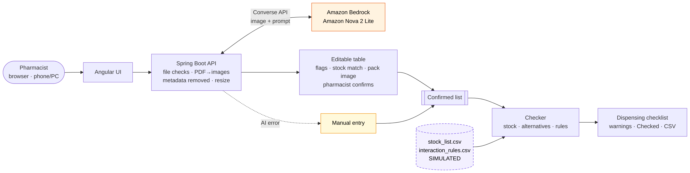

"Pharmacist A" (declared pseudonym; real name withheld), Registered Pharmacist, Dulnitha Pharmacy, Kottawa – an independent community retail pharmacy (healthcare); pharmacy named with permission. The pharmacist dispenses prescriptions at the counter, most of them handwritten by different doctors. Evidence of need (face-to-face discussion, 30/09/2026; pharmacist's estimates): ~200 prescriptions/day, 70–80% handwritten; 2–3 min each to decipher, cross-check and match to stock (≈5–8 staff-hours/day); ~3% need a colleague or the prescriber. Misreading a drug or dose is a patient-safety risk.
A multimodal (vision) foundation model – Amazon Nova 2 Lite on Amazon Bedrock – looks at the photo and returns the items as structured
data in one step (Bedrock Converse API; image + prompt; a forced record_prescription tool fixes the answer format; temperature 0).
It understands context and shorthand, reports a confidence per item, needs no training data, runs in ≈2.5 s and costs ≈ LKR 0.33 per scan. The
model is a setting, so it can be changed without code. Alternative: Amazon Textract (handwriting OCR) → Amazon Comprehend
Medical (entity extraction) → rules. Against R1 it needs two separate services, OCR mistakes flow straight into the extraction, and Comprehend
Medical is tuned to US clinical text and drug names, so Sri Lankan brands and shorthand (e.g. "1×2", "5/7") may be missed. Nova met R1 in one
configurable step and was chosen; both options keep the app AWS-only.

| Test | Input | Expected | Actual | Result |
|---|---|---|---|---|
| TC1 success | Synthetic clear prescription: Lipitor 20 mg nocte; Klacid 500 mg bd × 5/7; Panadol 500 mg tds | Items correct within 30 s; Lipitor alternative; atorvastatin + clarithromycin warning | Read in 3.0 s; all 3 items and fields correct; 0 corrections. Lipitor out of stock → Atorvastatin (generic) 20 mg; R008 moderate warning | Pass |
| TC2 messy | Redacted real Sri Lankan prescription (4 items, dense cursive) | Uncertain fields flagged → corrected → check runs | All rows flagged low; one run missed 1 item; 20 corrections; check ran – all 4 "not in stock list – check manually" | Pass |
| TC3 error | Backend with an invalid model ID | Error message → manual entry → check runs | "AI not configured … – using manual entry"; items typed and confirmed; same checklist as TC1 | Pass |
| TC4 | Manual entry: Warfarin 5 mg + Disprin 300 mg | Major interaction warning | R001 major: "Increased bleeding risk. Confirm with prescriber." | Pass |
Critical evaluation. 82 automated tests pass (Bedrock mocked). On 9 redacted Sri Lankan prescriptions (33 items) Nova found 76% of items and read 52% of drug names and 42% of fields correctly, but flagged 100% of the items it got wrong (2.4 s/scan). Clear handwriting was read perfectly and repeatably (TC1); dense cursive was not, the model sometimes added a duration that was not written and could miss an item without a flag. Three prompt versions and the larger Nova Pro did not improve accuracy. Improvements: a pilot with more local samples, per-line cropping, and showing which part of the photo each field came from.
| Factor | Assessment |
|---|---|
| Technical | Any browser on the pharmacy's PC or phone; one small AWS Lightsail server; Amazon Bedrock; internet needed for the AI (manual entry and the check still work). |
| Data / services | Synthetic and redacted samples only (with permission). Stock list and rules are simulated (34 items, 21 textbook rules – not a clinical database); real use needs the pharmacy's stock export and a reviewed interaction source. |
| Skills / time | Staff need ~2 h training; upkeep needs basic AWS skills. Built in 4 weeks; a pilot needs 2–4 more (hosting, HTTPS, login, real stock data). |
| Privacy / security | Image metadata removed; patient details ignored and never stored; least-privilege IAM (Nova only); no keys in code; images processed in the USA (no AWS region in Sri Lanka) – PDPA No. 9 of 2022 cross-border rules for health data must be checked, and login + HTTPS added, before real use. |
| One-off setup | LKR | Basis |
|---|---|---|
| Devices (existing PC + phone) | 0 | assumption |
| Installation & configuration (AWS, server, HTTPS, login) | 15,000 | assumption |
| Stock-list export / integration | 5,000 | assumption |
| Staff training (~2 h) | 5,000 | assumption |
| Software licences (open source) | 0 | free |
| Total setup | 25,000 |
| Recurring per month | LKR | Basis |
|---|---|---|
| Bedrock Nova 2 Lite – 4,500 scans (1,761 in / 179 out tokens each) | 1,492 | measured × price |
| AWS Lightsail server (USD 7) | 2,100 | price |
| Domain name (HTTPS certificate free) | 300 | assumption |
| Maintenance & support | 2,000 | assumption |
| Total (LKR 1.31 per prescription; LKR 70,700/year) | 5,892 |
Assumptions: 150 handwritten prescriptions/day × 30 days; Nova 2 Lite USD 0.33 / 2.75 per 1M input / output tokens (verify); staff cost LKR 300/h. Simulated vs realistic: the PoC ran on a laptop with simulated stock data and cost ≈ USD 0.09 in Bedrock calls (78 scans, no free tier assumed); realistic use adds the server, domain, maintenance and stock integration above. Affordability: saving 1 minute per prescription [assumption, not yet measured] is worth ≈ LKR 22,500/month (net ≈ LKR 16,600; setup repaid in ≈ 1.5 months), and the running cost is covered by saving only 16 seconds per prescription – affordable for one pharmacy. Lower-cost alternatives: Nova Lite v1 (≈ LKR 4,600/month, accuracy untested) or manual work (LKR 0, but no time saving and no automatic interaction check).
Benefits: fast (≈2.5 s vs 2–3 min); cheap; flags its own uncertain items; structured, auditable lists; automatic stock, alternative and interaction checks; pack images help pick the right product.
Limitations: weak on dense cursive handwriting; may add an unwritten duration or miss an item; small test set (n = 9 + synthetic); simulated stock and rules; no live stock-system link; no login yet; internet required.
Risks → mitigations: misread drug or dose → pharmacist confirms every item, flags, photo side by side, decision-support label; patient-data exposure → metadata removed, nothing stored, redaction, PDPA review; AI outage → automatic manual entry; surprise bill → AWS budget alert.
Adoption: the pharmacy owner pays (≈ LKR 25,000 setup + ≈ LKR 5,900/month). Start with a two-week pilot at the counter: the dashboard records read success and corrections, and staff time prescriptions with and without the tool. Main condition to proceed: measured accuracy and a time saving above the 16-second break-even.
| # | AI tool | Purpose | Prompt or instruction (summary) | Output used | How the output was verified or corrected |
|---|---|---|---|---|---|
| 1 | [confirm] e.g. Claude (claude.ai) | Topic idea and problem framing | Suggest an emerging-technology proof of concept for a community pharmacist; compare options | Choice of an AI prescription reader; Textract + Comprehend Medical as the alternative | Problem and figures confirmed in a discussion with the pharmacist (30/09/2026); alternative compared against R1/R2 |
| 2 | [confirm] | Week 1–2 slides, progress forms, problem statement | Draft slides and forms from my notes on the pharmacist discussion | Wording and layout of the progress documents | Edited by the student; all figures are the pharmacist's estimates, not AI-generated |
| 3 | [confirm] | Simulated stock list and rules; CLAUDE.md project brief | Create a 34-item simulated stock list and textbook interaction rules; write project instructions for Claude Code | data/stock_list.csv, data/interaction_rules.csv, CLAUDE.md | Labelled SIMULATED / not a clinical database; pharmacist review requested |
| 4 | Claude Code (Claude Opus 5.5) | Week 1 scaffold and AWS setup guidance | "Do the Week 1 tasks in CLAUDE.md with a Spring Boot backend and Angular frontend; AWS only; no real credentials" | Repository structure, configuration, status page, model-access check; IAM least-privilege policy and budget steps | App started; tests passed; git checked for secrets; student followed the AWS steps and the access check returned OK |
| 5 | Claude Code | Feature 1 – reading the prescription | Build CLAUDE.md §6: image checks, Nova Converse call with a forced tool, retry, error mapping, name check, editable UI with fallback; PDF upload; dashboard | ImageUtils, Extractor, NameCheck, error types, scan page, dashboard, history, settings | JUnit tests with a mocked Bedrock client; real scans; UI checked in headless Chrome; defects found and fixed (page overflow, clipped labels, wrong error mapping) |
| 6 | Claude Code | Design and feasibility documents | "Architecture with a Mermaid diagram, feasibility draft, cost script; mark which numbers are assumptions and which are measured" | docs/architecture.md, docs/feasibility.md, scripts/cost_estimate.py | Diagram rendered and checked; figures cross-checked with the script output; prices and PDPA points marked "to verify" |
| 7 | Claude Code | Redacting real prescription photos | "Redact and save in another folder" (with the patients' permission) | Redacted Sri Lankan samples (kept locally, not on GitHub) | Only medicine lines kept; every image inspected; two leaks found and fixed; student re-checked |
| 8 | Claude Code | Accuracy evaluation and prompt improvement | Run a baseline, improve the prompt for Sri Lankan shorthand, compare; test Nova Pro | scripts/evaluate.py, ground truth, prompts v2/v3, docs/evaluation.md | Scoring checked offline before any API call; negative results reported (v3 and Nova Pro did not help); ground truth to be verified by the student |
| 9 | Claude Code | Test cases | Run TC1–TC4 through the real UI and record input, expected and actual results | docs/test_log.md and screenshots | An invalid first run (corrections prepared before seeing the AI output) was discarded and repeated; partial results reported honestly |
| 10 | Claude Code | Feature 2 – dispensing check and pack images | Build the CLAUDE.md Week 3 checker; "show a sample image of the suggested drug to reduce pharmacist error" | Checker, DrugImages, /api/check, checklist UI (warnings, alternatives, Checked boxes, CSV) | 82 JUnit tests incl. all 8 required checker cases; TC1–TC4 passed; images labelled "pack to dispense", illustrations only (no internet images) |
| 11 | Claude Code | Submission readiness | Itemise costs, finish README, ZIP script, secrets scan, fresh-install test, report draft, demo script | README, make_zip.sh, report draft, demo script, this table | Whole git history scanned (no secrets); fresh clone built and tested; figures taken from the test log, evaluation and cost script; student reviewed |
| 12 | [confirm] | Student's own app changes (History image store, theme toggle, tooltips, confirm dialogs, "Did you mean…?" chips) | [tool and prompt, or "written by the student without AI"] | ImageStore, theme / tooltip / dialog components | [e.g. reviewed, tested with ImageStoreTest] |
Responsibility: the student reviewed the AI-generated code and documents, ran the tests and checked the outputs above. AI output was not accepted unchecked; where it was wrong it was corrected.